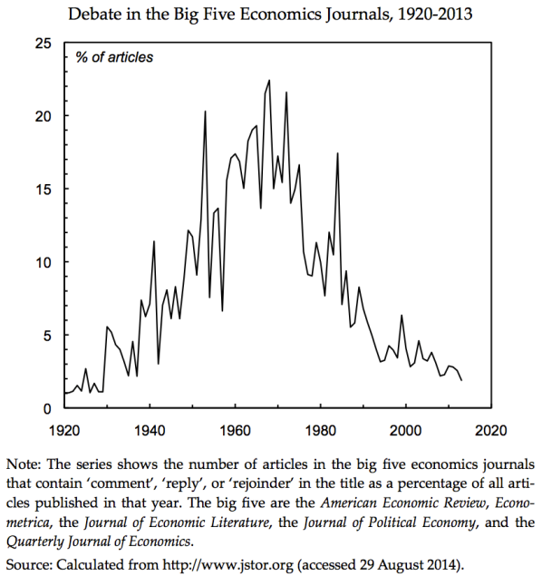

2014-12-15 00:43:00
過去十天裡，每次用中時的網站工具寫稿，一陣子之後，電腦就當機，大約有十幾個小時的稿子就這様消失到黑洞裡去。我現在學乖了，先建立一個Microsoft Word的檔案，再一次拷貝過去。我本來不這麼做是因為網站聯接和圖片必須用中時的特殊手段才能輸入，所以在剪貼的過程中還要再做一次集成。但是中時的網站工具没有暫時保存文章的功能，两害相權取其輕，還是得另外建檔。
今天先簡單談談一篇有趣的經濟學論文統計結果。原文在這裡：http://dissidentvoice.org/2014/12/the-rise-and-fall-of-debate-in-economics/。文章的主要内容是這張圖：

横軸是年分，縱軸是美國五大經濟學學術期刊裡的論文標題有“Comment”（“評論”），“Reply”（“回答”）或“Rejoinder”（“回覆”）等字眼的百分比。這様的標題在經濟學界代表着那篇論文是一系列辯論中的一部分。辯論在不能靠實験决定真偽的社會學科裡十分重要，例如我最喜歡的社會學期刊《Foreign Affairs》（《外交事務》）就甘脆分為三大部分：本期專題，散文（Essays）和辯論（Reviews & Responses），其中辯論占最近一期（2014年十一月/十二月號）21篇文章中的6篇，亦即29%。
原本美國的政經大權都由資本家掌控，所以美國經濟學界也是主張laissez faire（自由放任，無所作為，隨他亂搞）的一言堂。在1929年股市大恐慌引發經濟大蕭條之後，有識之士開始鼓吹政府制定金融規則和引導經濟發展的重要性，上圖中的那條曲線也就從1%急劇地上跳到5%。其後隨著凱因斯（Keynes，英國經濟學家。他强調自由市場制度内含的不穩定性，主張憑藉政治力量來維持平衡和避免極端。參見前文《美元的金融霸權》）理論的建立和傳播，辯論的百分比逐步上升，在1960年代和1970年代前半達到了還算健康的20%左右的水準。
1960年代是美國國力的巔峰，社會財富的分配也達到歷史性的公平均匀程度。於是在1970年代初期，美國的億萬富豪們開始了全面的大反攻。首先是買通國會，修法使收買議員成為公開而且合法的行為，從此建立了龐大的遊說工業（Lobby Industry）。其次是參照烟草公司數十年來製造假科學論文以“證明”吸烟無害健康的成功先例（參見http://tobacco.stanford.edu/tobacco_main/images.php?token2=fm_st067.php&token1=fm_img1550.php&theme_file=fm_mt004.php&theme_name=Scientific%20Authority&subtheme_name=Pseudoscience），建立了好幾個智庫，專門負責扭曲事實，假造證據，以便在推行謀求私利的新法案時，能有學術上或半學術上的理論根據。例如很有名的傳統基金會（The Heritage Foundation）就是在1973年，靠著啤酒、石油和金融大亨的捐款而創立的。另一個大名鼎鼎的美國企業研究所（American Enterprise Institute，AEI）雖然是1938年就成立了，但是一直默默無聞，無足輕重；直到1972年忽然收到大筆捐款，從此招兵買馬，連福特總統在1977年卸任之後，都和他的幕僚一起搬家到AEI。這些銭包飽滿的專業宣傳機構，不但很快地幫雷根選上了總統，在經濟、外交和軍事上，也從此一直非常成功地使美國的政策只為大公司的利潤服務。
在經濟學界，要直接收買教授當然比建立基金會還更便宜，不過哈佛或史丹佛的教授們自視太高，所以就從中西部下手，尤其是芝加哥大學的經濟系，由於有鼓吹絶對自由主義的Milton Friedman在，早在1950和1960年代就是中情局送拉丁美洲學生接受對美國資本完全開放的洗腦教育的重點站，在1970年代初期也將忽悠的炮口轉向對内，成為美國國内新一代自由放任主義的掌旗手（Standard Bearer）。後來在20世紀末期，美國的經濟學界基本上分為两支：即所謂的 “鹹水經濟學”（“Salt Water Economics”）和“淡水經濟學”（“Fresh Water Economics”）。前者指東西两岸諸大學，其對自由放任主義的主張還稍受理性的節制；後者指中西部不臨海的大學，其對自由放任主義的信仰則已到達完全狂熱的地步。對他們來說，政府做什麼都是有害的（即雷根的名言：“Government is not the solution to our problems; government is the problem.”），連修公路、執法和作戰都應該留給私人來做。
所以在上圖中，那條曲線從1975年開始下降。雷根上任之後採行Voodoo Economics（巫妖經濟學），幾個講究理性思考的經濟學教授在1980年代試圖抵抗，留下了一個小尖峰，但是美國的整個社會和政體都在快速腐化，他們當然擋不住經濟學界跟著腐化的過程。到2014年，辯論的百分比已經掉到低於3%。對我來說，最可怕的是在2008年美國金融經濟崩盤，而那條曲線居然只在3%的水平震蕩了一下：也就是說美國經濟學界的腐化已經到了無可回天的地步，鹹水經濟學已經被淡水經濟學徹底征服，不再有自我反省的能力，更别提改革或創新了。
三十年前，哈佛的經濟系研究生，只有不到20%認為經濟學是科學；到今年，絶大多數填了Yes。這並不代表美國經濟學有什麼進步；剛好相反，是因為他們被成功洗腦，以致連什麼是科學都不知道了。淡水經濟學征服美國經濟學界，和超弦征服美國物理學界的過程很類似（哈佛物理系也曾抵抗超弦15年左右，不過最後還是被攻陷了。唯一成功反抗到現在的一流學校，只有柏克萊）。不過在後果上，幾萬個超弦教授頂多浪費幾十億美元的薪水，巫妖經濟學卻已經摧毁了歐美幾十萬億美元的經濟生產力。迷思害人，莫此為甚。